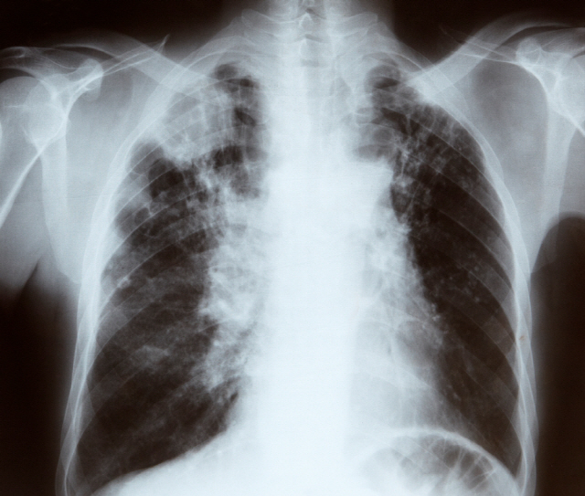

- Active Research:
Utilizing AI to analyze radiological images
(X-ray, CT) to diagnose diseases - Essential Dataset:
Requires well-organized data - The Challenge:
Hospital reports = unstructured text

Radiology image example
faint scarring found
at the right lung
at the right lung
※ Click the image